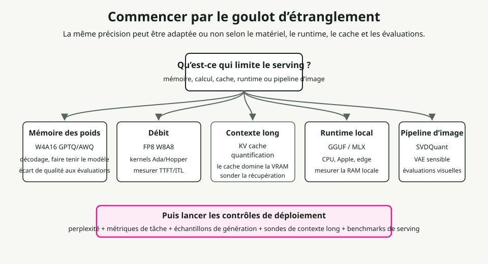
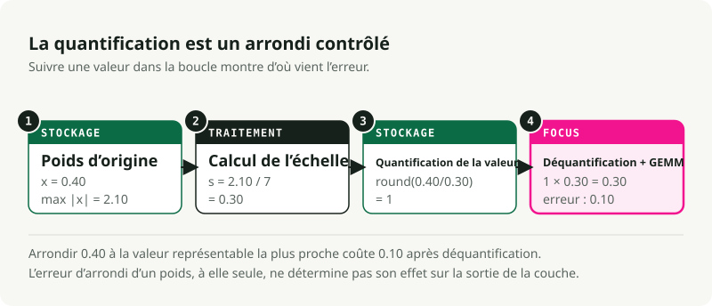
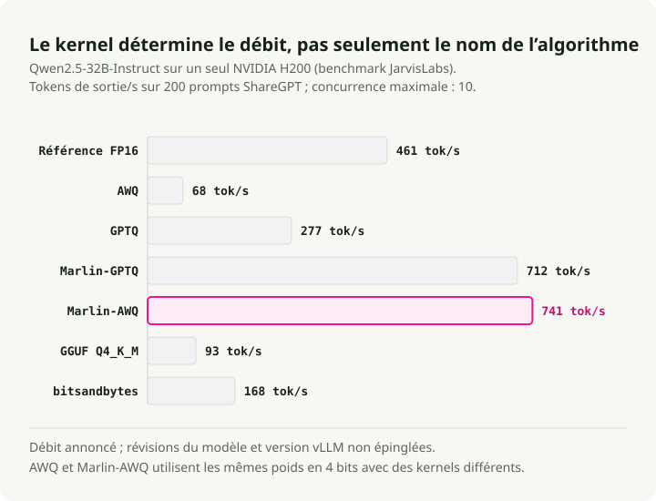
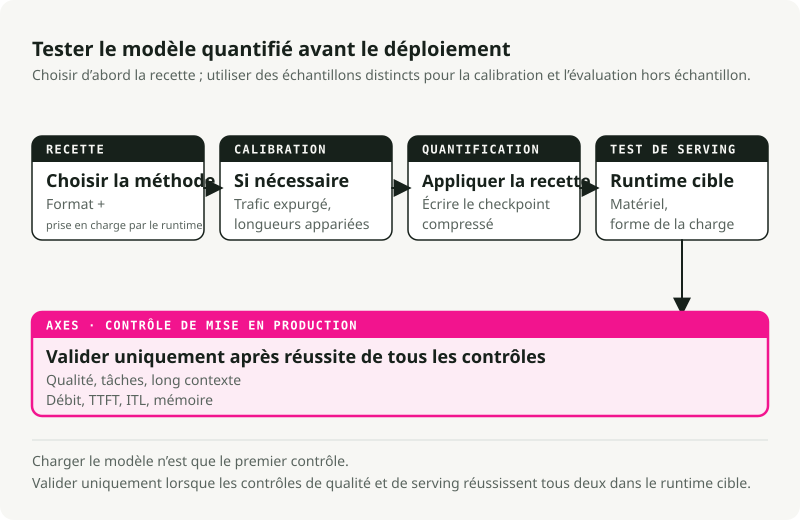

Traduction automatique
Cet article a été traduit automatiquement depuis la version originale en anglais.
Quantification des modèles en 2026 : des fondements à la mise en production
La quantification n’est rarement un simple bouton à appuyer pour utiliser moins de bits et économiser de la mémoire ; même sa définition de base dépend du fait que l’on effectue une compression pesées, activations, ou les deuxDans les systèmes de déploiement en production, la quantification exige un équilibre entre mémoire de poids, calcul des activations, taille du cache KV, noyaux en temps de exécution, prise en charge matérielle, données de calibrage et qualité. Un modèle de 4 bits peut tenir dans la VRAM mais fonctionner lentement si le noyau n’est pas correctement optimisé, car le Benchmark JarvisLabs vLLM affiche le moment où l’algorithme et le noyau diffèrent. FP8 est exceptionnel sur les GPU NVIDIA Hopper lorsque le temps d’exécution et le matériel le prennent en charge, mais il est inutile sur des matériels ne disposant pas de chemins natifs pour les tenseurs en FP8 ; TensorRT-LLM’s matrice de prise en charge matérielle Cela rend cette dépendance explicite. Quantification de la cache KV cela peut être plus important que la quantification par poids lors du traitement de contextes longs et d’une forte concurrence ; il modifie le format numérique utilisé pour stocker et lire les tenseurs clé/valeur en mémoire cache.
En résumé : Identifiez le goulot d’étranglement avant de choisir la largeur de bit. Utilisez AWQ ou GPTQ Lorsque les poids ne tiennent pas dans la VRAM. Utilisez FP8 W8A8 Lorsque vous exécutez des charges de travail à fort débit sur des GPU prenant en charge le format FP8. Tester Quantification de la cache KVLorsque un contexte volumineux ou une forte concurrence épuisent la mémoire. Utilisez Fichiers GGUF utilisant les encodages tensoriels de llama.cpp tels que Q4_K_M, Q5_K_M ou Q8_0 pour l’inference locale sur CPU, Apple Silicon et ordinateur de bureau. Conservez NF4 Principalement destiné au retouche de style de type QLoRA, et non en tant que format par défaut pour le déploiement en production. »

1. Commencer par le goulot d’étranglement
La bonne question n’est pas « Combien de bits puis-je supprimer ? », mais plutôt « Qu’est-ce qui limite actuellement cette charge de travail ? »
Goulots d’étranglement courants et leurs points de départ :
| Si c’est bien le problème | Commencez par ici. | Outils typiques | Vérifier avant déploiement |
|---|---|---|---|
| Les poids du modèle ne tiennent pas dans la VRAM | Quantification par poids uniquement W4A16 | AWQ ou GPTQ avec llm-compressor ou GPTQModel |
Perplexité, codage, raisonnement, suivi d’instructions |
| Le service à haut débit est limité par les ressources de calcul | FP8 ou INT8 W8A8 | FP8 PTQ SmoothQuant, TensorRT-LLM, vLLM | Débit, TTFT, précision de la tâche |
| Un contexte long ou une forte concurrence saturent la GPU. | Quantification de la cache KV | vLLM, TensorRT-LLM, ou Cache quantifié des Transformers | Recherche à long contexte, latence, sécurité et qualité |
| Inference locale sur CPU, Apple Silicon ou ordinateur de bureau | Fichiers GGUF dotés d’encodages de tenseurs locaux | llama.cpp, Ollama, LM Studio |
Latence du prompt, utilisation de la RAM, encodage du tenseur sélectionné, et qualité subjective de la sortie |
| L’adaptation du fine-tuning doit tenir sur une seule GPU | NF4 / QLoRA | bitsandbytes, peft |
Perte de fine-tuning et qualité du modèle fusionné |
| Le pipeline de génération d’images est trop volumineux ou trop lent. | INT4 ou FP8 spécifiques à la diffusion | SVDQuant, Nunchaku, torchao, NVIDIA ModelOpt |
Artefacts visuels, alignement des prompts, latence, VRAM |
Utilisez cette table comme carte. Les sections suivantes expliquent pourquoi ces points de départ diffèrent.
Quelques termes avant les calculs mathématiques
- W{x}A{y} indique la précision des opérations mathématiques sur les poids et les activations prises en charge, généralement les chemins GEMM dans les moteurs de déploiement. W4A16 stocke les poids sous forme de 4 bits et conserve les activations avec une précision de 16 bits. W8A8 utilise des poids et des activations de 8 bits dans les chemins de calcul pris en charge, mais il ne définit pas automatiquement le type de données de stockage persistant pour chaque tenseur en temps de exécution.
- FP8, INT8, INT4, NF4 sont des formats de nombres. Ils déterminent quels valeurs peuvent être représentées.
- GPTQ, AWQ, SmoothQuant, QuaRot sont des algorithmes. Ils déterminent comment convertir un modèle entraîné en un format à moindre précision.
- GGUF est un format de fichier, et non un algorithme de quantification. Il stocke des tenseurs ainsi que des métadonnées pour GGML et
llama.cpp-des temps d’exécution de type style. Un fichier GGUF peut contenir des types de tenseurs non quantifiés tels queF16,BF16, ouF32, ou des encodages de tenseurs quantifiés ainsi que des préférences prédéfinies telles queQ4_K_M,Q5_K_M,Q8_0,IQ*,TQ*, ouMXFP4. Ne pas lireGGUFen tant que recette de déploiement pour du FP8 W8A8 de type CUDA. - Cache KV est la mémoire d’attention utilisée pendant la génération. Elle stocke les clés et valeurs précédentes afin que le modèle n’ait pas à recalculer l’intégralité de la conversation à chaque token.
- Quantification de la cache KV stocke les tenseurs d’activation clé/valeur en mémoire tampon sous un format à précision réduite tel que FP8, INT8, INT4 ou INT2, en fonction du support disponible au moment de l’exécution. Cela diffère de mise en cache des préfixes, PagedAttention, ou le transfert de charge, qui déterminent si les entrées de cache sont réutilisées, comment elles sont allouées, ou où elles se trouvent.
- GEMM désigne la multiplication matricielle générale. La majeure partie du temps d’inference des transformateurs est consacrée à des opérations de multiplication matricielle.
2. La quantification repose sur un arrondi contrôlé
La quantification permet de mapper des valeurs à haute précision vers un ensemble plus restreint de valeurs représentables, ce qui constitue la définition fondamentale utilisée par les deux Hugging Face Optimum et TensorRT-LLM. Vous économisez de la mémoire et de la bande passante. Cependant, cela entraîne également des erreurs d’arrondi.
La quantification de BF16 vers INT4 réduit le nombre de valeurs disponibles à seulement 16 cases discrètes, c’est pourquoi les travaux sur les formats à faible bitage tels que GPTQ, AWQ, et SVDQuant Consacrez autant d’efforts aux valeurs aberrantes et à l’erreur de reconstruction. Si ces plages captent avec précision la distribution des poids du modèle, vous économisez de la mémoire sans perdre en capacités. Si la grille de quantification écrase un canal aberrant important, le modèle perd sa capacité de raisonnement, de suivi d’instructions ou sa fidélité visuelle.
Mappage symétrique et asymétrique
Suite à la mappage affiné utilisé dans les systèmes courants guides de quantification, la quantification mappe une valeur flottante continue \(x \in [\beta, \alpha]\) sur un réseau discret.
- \(x\) est la valeur d’origine à haute précision.
- \(x_q\) est la valeur quantifiée.
- \(s\) est l’échelle, ou taille d’étape.
- \(z\) est le point zéro, c’est-à-dire la position entière qui représente
0.0. - \([q_{\min}, q_{\max}]\) représente la plage entière cible. Les valeurs signées de 4 bits utilisent fréquemment \([-7, 7]\).
Quantification symétrique : elle centre la grille autour de zéro et définit \(z = 0\) :
Ce format est compatible matériellement, car les calculs en temps de exécution n’ont pas besoin de soustraire un décalage de point zéro ; la pile de quantification de PyTorch expose ces choix de scalaire affiné et de point zéro comme des paramètres de quantification primitifs. torchaoQuantification asymétrique : ce mécanisme déplace la grille afin de couvrir des plages de valeurs décalées.
Ce réseau décalé permet de mieux conserver des activations uniquement positives, mais cet offset ajoute une charge de calcul, à moins que le noyau ne s’en charge efficacement.

La granularité de l’échelle est importante
Le facteur d’échelle peut s’appliquer à un tenseur de poids entier, à un canal unique, ou à un petit groupe de valeurs ; vLLM : documentation sur le cache KV en format FP8 Utilisez la même distinction entre les stratégies de mise à l’échelle par tenseur et par tête d’attention. Les groupes plus petits conservent généralement mieux la qualité, mais ils nécessitent un stockage accru de métadonnées relatives à la mise à l’échelle.
- Échelle par tenseur : Un seul facteur d’échelle est utilisé pour toute la matrice de poids. Cette méthode est simple du point de vue computationnel, mais la présence d’un poids atypique n’importe où dans la matrice déforme la grille entière, ce qui entraîne une perte de précision pour tous les autres poids de cette couche.
- Échelle par canal : Un facteur d’échelle distinct est attribué à chaque ligne (canal de sortie) de la matrice de poids. Étant donné que les neurones de sortie présentent des plages numériques différentes, attribuer une échelle propre à chaque canal permet d’éviter que les plages étroites ne perdent en précision au profit des canaux à plus large plage. C’est la valeur par défaut standard pour de nombreux cas. Quantification des poids en 8 bits chemins.
- Échelle par groupe (par bloc) : Chaque ligne de la matrice des poids est divisée en petits blocs séquentiels — généralement de 64 ou 128 éléments — et un facteur d’échelle est attribué à chaque bloc. C’est l’approche optimale pour les formats de poids à 4 bits, car elle isole les valeurs extrêmes des poids au sein d’un petit groupe local (par exemple, comme décrit dans les documents AutoGPTQ).
group_size=128dans son Exemples de GPTQ), tout en préservant la précision des autres poids de la couche.
Les poids étant statiques, il est possible de calculer leurs échelles hors ligne avant même de charger le modèle. Les activations, quant à elles, changent à chaque token, ce qui rend leurs plages imprévisibles. Cela amène deux options pour gérer les activations lors du déploiement :
- Échelle de activation statique Calcule les échelles d’activation hors ligne à l’aide d’un ensemble de données de calibrage, puis encode ces échelles en dur dans le modèle. Lors de l’exécution, le modèle utilise ces échelles fixes sans effectuer de calculs supplémentaires. Cela permet une vitesse d’exécution élevée, mais cette méthode ne fonctionne que si vos données de calibrage correspondent parfaitement aux longueurs et aux distributions des entrées observées en production. Si une requête en production provoque une augmentation brutale des activations en dehors de la plage calibrée, le modèle la tronque, ce qui altère la sortie.Échelle dynamique d’activation calcule dynamiquement l’échelle des activations pendant le passage en avant, en se basant sur les valeurs réelles des tokens à ce moment précis. Il gère parfaitement les variations des prompts et permet de détecter les pics d’activation inattendus ; cependant, le calcul du minimum et du maximum du tenseur d’activation à chaque couche entraîne une charge supplémentaire en temps de exécution et nécessite des noyaux spécialisés et optimisés pour assurer une vitesse de traitement élevée.
The Cache KV se situe entre ces deux cas. Les clés et les valeurs sont des tenseurs d’activation en temps de exécution : chaque couche les calcule à partir des états cachés lors du passage en avant. Une fois générés, cependant, ils cessent d’être des intermédiaires temporaires issus de multiplications matricielles pour devenir un état de service persistant que l’attention lit pour les tokens ultérieurs. Un moteur de service peut stocker cet état en précision inférieure tout en conservant les métadonnées de scalage à côté, comme le montre vLLM : cache KV quantifié, Cache KV en FP8 de TensorRT-LLM, et Cache quantifié des Transformers. Ce choix entre stockage en cache et mémoire est indépendant de la précision d’activation utilisée au sein des noyaux linéaires ; c’est pourquoi l’expression « quantification du cache KV » est bien définie, mais ne doit pas être employée comme synonyme de toute optimisation du cache KV.
La PTQ et la QAT s’effectuent à des étapes différentes
La quantification post-entraînement, ou PTQ, compresse un modèle entraîné a posteriori. Entraînement conscient de la quantification, ou QAT, expose le modèle au bruit de quantification pendant l’entraînement afin qu’il puisse s’adapter.**
| Méthode | Lorsque les plages sont apprises | Utilisez-le lorsque | Le coût que vous devez payer |
|---|---|---|---|
| PTQ uniquement basé sur le poids | En mode hors ligne, pour des poids statiques | Le modèle ne s’adapte pas ou son décodage est limité par la bande passante. | Les activations s’exécutent toujours en 16 bits |
| PTQ statique | En mode hors ligne, à partir des instructions de calibrage | Les données de calibration doivent correspondre à celles utilisées en production | |
| PTQ dynamique | Temps d’exécution, par lot ou par chemin d’activation | Les distributions d’entrée présentent de grandes variations. | Surcoût en temps de exécution et support matériel plus restreint |
| QAT | Pendant l’entraînement | PTQ détériore la qualité d’un modèle sensible | Infrastructure complète de formation et beaucoup plus de ressources de calcul |
Les données de calibration doivent ressembler au trafic que vous allez gérer ; par exemple, la voie de calibration du cache KV de vLLM utilise un ensemble de données soigneusement sélectionné llm-compressor. Si les prompts de production sont des séquences RAG longues, des paragraphes courts de Wikipédia vous fourniront des valeurs de référence intéressantes, mais entraîneront une déploiement défaillant. Le modèle ajustera alors ses échelles d’activation en fonction de textes courts, avant de rencontrer des schémas d’activation différents lorsqu’apparaissent des prompts réels à contexte long, un risque également observé dans Évaluations de quantification pour contexte long.
3. Les formats de nombres déterminent les exigences matérielles
Le format de nombre définit les valeurs que le modèle peut représenter en mémoire, mais le fait d’en stocker un ne signifie pas pour autant que votre GPU puisse le traiter efficacement. Une exécution rapide nécessite des noyaux en temps de exécution ainsi qu’un soutien matériel adapté à cette largeur de bits et à ce format spécifiques ; les documents TensorRT-LLM décrivent à la fois ces éléments. liste de recettes et matrice de prise en charge matérielle.
| Format | Espace de stockage par valeur | Bonne valeur par défaut pour | Point d’arrêt principal |
|---|---|---|---|
| BF16 / FP16 | 2 octets | Exécution compatible avec l’inférence de base et l’entraînement | Utilisation élevée de la VRAM et trafic important en bande passante mémoire |
| FP8 | 1 octet | Serveur W8A8 à haut débit fonctionnant sur Ada, Hopper et Blackwell | Nécessite des cœurs de tenseur FP8 natifs ainsi que un support en temps de exécution |
| INT8 | 1 octet | W8A8 fonctionnant sur du matériel plus ancien ou non NVIDIA | Déviations d’activation et sensibilité de la calibration statique |
| INT4 | 0,5 octet | W4A16 lorsque la mémoire de poids constitue la principale contrainte | Perte de qualité sur les modèles plus petits ou ceux nécessitant beaucoup de calculs logiques |
| FP4 / NVFP4 | ~0,5 octet | Les expériences de l’époque Blackwell et les premières voies de distribution | Exigences de compilateur et de temps d’exécution spécifiques au matériel |
| encodages GGUF de llama.cpp / préreglages | Variable | Inference locale sur CPU, Apple Silicon, poste de travail et edge | GGUF est le conteneur ; l’encodage des tenseurs correspond au choix de quantification. |
| NF4 | 0,5 octet | Entraînement de l’adaptateur QLoRA | Généralement, le mauvais format d’export pour le déploiement en production |
BF16 et FP16 utilisent tous deux 16 bits, mais ils répartissent la précision de manière différente, ce qui entraîne des modes de défaillance distincts. BF16 conserve la plage d’exposant de 8 bits de FP32, ce qui le rend moins sujet aux débordements. FP16, quant à lui, dispose de davantage de bits pour la mantisse mais d’une plage d’exposant plus étroite, ce qui exige une plus grande prudence en cas de pics d’activation ; l’évaluation menée par Kurtic et al. utilise explicitement BF16 en tant que référence de base lors de la comparaison des formats de diffusion FP8, INT8 et INT4.
FP8 comporte deux variantes courantes. E4M3 offre une plus grande précision et est généralement utilisé pour les poids et activations en entrée. E5M2 offre une plus grande plage dynamique et est plus adapté aux gradients ou aux chemins d’activation volatils ; vLLM prend en charge les deux. Types de cache KV pour FP8 E4M3 et E5M2. Dans l’étude de Kurtic et al. présentée à ACL 2025, intitulée « Give Me BF16 or Give Me Death ». FP8 W8A8 est en pratique sans perte. Sur la famille Llama-3.1, plus de 500 000 évaluations ont été réalisées. Cela ne signifie pas pour autant que chaque déploiement en FP8 se fait automatiquement. Il indique plutôt que ce format est très performant lorsque la pile de service l’utilise correctement.
Blackwell intègre des formats de micro‑échelle tels que MXFP8 et NVFP4. Au lieu d’appliquer une seule échelle à tout le tenseur ou à toute ligne, le micro‑échelonnage utilise de petits blocs. Explication de NVFP4 chez NVIDIA décrivait les valeurs en virgule flottante à 4 bits regroupées par blocs de 16, avec des facteurs d’échelle FP8 et un facteur d’échelle FP32 de niveau supérieur. Cette approche vise à offrir une empreinte proche de celle d’un INT4 tout en conservant un comportement en virgule flottante. Cependant, elle nécessite une architecture matérielle, un compilateur et un support en temps de exécution adaptés, ce qui explique pourquoi TensorRT-LLM le mentionne Prise en charge du FP4 et du FP8 selon la génération de la GPU.
4. Quantification uniquement des poids vs. quantification des poids et des activations
La notation WxAy décrit la précision des poids et des activations, facteurs qui sollicitent le GPU de manières différentes lors de l’inférence.**
Lors de la pré‑remplissage, le modèle traite l’instruction d’entrée. Cette phase est généralement limitée par les ressources de calcul, car la GPU effectue de grandes multiplications matricielles, ce qui explique pourquoi Procédures W8A8 FP8/INT8 ce qui est important pour un service axé sur le débit de données.
Lors de la décodage, le modèle génère un token à la fois. Cette phase est souvent limitée par la bande passante mémoire, car la GPU doit constamment charger des poids depuis la VRAM pour produire le token suivant ; les travaux se concentrant uniquement sur les poids, tels que GPTQ et AWQ Ciblez cette pression en réduisant le nombre d’octets inutiles.W4A16
W8A8 compresse les poids ainsi que les tenseurs d’activation utilisés par les noyaux matmul pris en charge. Si le matériel dispose de cœurs tensoriels natifs à faible précision, le moteur de déploiement peut effectuer les calculs matriciels directement en FP8 ou en INT8. C’est pourquoi le format FP8 permet d’améliorer la capacité de traitement : il réduit la consommation mémoire et utilise une arithmétique plus rapide. Cela ne signifie pas pour autant que le cache KV soit stocké dans le même format à 8 bits ; veuillez vérifier cela dans les paramètres du runtime. » type de données du cache ou implémentation du cache separément.
Si le modèle tient à peine dans la VRAM, commencez par quantification uniquement basée sur le poids pour réduire l’empreinte mémoire. Si le modèle tient dans les limites mais présente des difficultés en termes de débit sous de lourdes charges par lots, procédez à une évaluation FP8 ou INT8 W8A8 pour accélérer la phase de calcul. Si les problèmes de mémoire ne se manifestent qu’au cours de conversations longues, évaluez d’abord le terme de cache KV. Si celui-ci domine, effectuez des tests Quantification de la cache KV plutôt que de comprimer davantage les poids ; si des préfixes répétés dominent, activez cache préfixal au lieu de cela.
5. Algorithmes versus noyaux de temps d’exécution
Algorithmes de quantification (comme GPTQ ou AWQ) définir comment les poids du modèle sont mappés vers une précision inférieure. Les noyaux en temps de exécution (comme Marlin ou Les noyaux personnalisés de vLLM) sont le code GPU de bas niveau qui exécute la multiplication matricielle. Un modèle fortement compressé ne fonctionnera rapidement que s’il dispose d’un noyau optimisé pour son format de quantification spécifique.

Le benchmark vLLM de JarvisLabs Sur Qwen2.5-32B-Instruct avec une NVIDIA H200, l’effet du noyau devient visible :
| Quantification / noyau | La perplexité : plus elle est faible, mieux c’est. | Pass@1 : plus la valeur est élevée, mieux c’est. | Débit de traitement | TTFT |
|---|---|---|---|---|
| Baseline FP16 | 6.56 | 56.1% | 461 tok/s | 57,7 ms |
| AWQ | 6.84 | 51.8% | 68 tok/s | 277,8 ms |
| GPTQ | 6.90 | 46.3% | 277 tok/s | 107,1 ms |
| Marlin-GPTQ | 6.97 | 45.7% | 712 tok/s | 51,9 ms |
| Marlin-AWQ | 6.84 | 51.8% | 741 tok/s | 73,5 ms |
| GGUF Q4_K_M | 6.74 | 51.8% | 93 tok/s | 958,0 ms |
| bitsandbytes | 6.67 | 51.8% | 168 tok/s | 135,3 ms |
Ne copiez pas ces valeurs dans votre propre environnement de déploiement. Elles proviennent d’un seul modèle, d’une seule catégorie de GPU et d’une seule configuration logicielle. Elles mettent en évidence un aspect précis : le nom de l’algorithme figurant dans le fichier de sauvegarde ne vous indique pas la vitesse de traitement des requêtes.
Par exemple, AWQ Et Marlin-AWQ utilisent tous deux les mêmes poids de 4 bits. Le Marlin L’implémentation est beaucoup plus rapide, car son noyau CUDA fusionne la déquantification et la multiplication matricielle en une seule opération GPU hautement optimisée.
Benchmarquez la version de référence ainsi que les variantes compressées avec le même mélange de prompts et l’outil identique, par exemple vllm bench serve:
vllm bench serve \
--model ./outputs/Qwen2.5-32B-Instruct-AWQ-W4A16 \
--dataset-name sharegpt \
--num-prompts 200 \
--input-len 1024 \
--output-len 256
Surveillez le débit, le TTFT, le temps de latence entre tokens, l’utilisation mémoire ainsi que la qualité des tâches. Si l’un de ces indicateurs évolue dans des directions opposées, c’est que le benchmark remplit correctement sa fonction.
Le menu des algorithmes
Utilisez ce tableau comme une référence, et non comme un classement :
| Algorithme | Format courant | Ce qu’il tente de préserver | Coût principal |
|---|---|---|---|
| GPTQ | W4A16 | Reconstruction par couches à l’aide d’estimations hessiennes | Calibration lente et traitement plus complexe |
| AWQ | Canaux d’activation importants | Nécessite une calibration ainsi que des noyaux de service fusionnés | |
| SmoothQuant | W8A8 | Comportement d’activation INT8 grâce au déplacement de l’échelle des valeurs atypiques dans les poids | Ajustement de l’échelle par modèle |
| QuaRot / SpinQuant | W4A4 / W4A8 | Réduire la pression des valeurs atypiques d’activation par le biais de rotations | Complexité de rotation en temps de exécution |
| HQQ | W4A16 / W2A16 | Compression rapide basée uniquement sur le poids, sans calibration | La qualité exige des vérifications en aval à des largeurs de bits très faibles. |
| QLoRA (NF4) | Adapter la mémoire d’entraînement | Ce n’est pas un choix idéal par défaut pour le service. | |
| llama.cpp GGUF : quantification en K-quantums / IQ-quantums | Encodages mixtes de tenseurs à faible nombre de bits | Qualité d’inférence locale par octet | Non conçu pour le traitement par lots dans le cloud |
L’ensemble outils évolue activement. AutoGPTQ a été Archivé en avril 2025, et AutoAWQ était Archivé et officiellement déprécié en mai 2025. Pour les nouveaux projets, commencez par llm-compresseur pour compressed-tensors points de contrôle consommés par vLLM, ou GPTQModel lorsque vous avez besoin du chemin actif de GPTQ avec Marlin, Machette, Options de mémoire MoE et déchargement sur disque.
Il convient de souligner un point avant de quitter le menu des algorithmes : le prunage et la distillation réduisent également les coûts de déploiement, mais ce ne sont pas des formats de quantification. 2:4 de sparsité structurée supprime les poids selon un schéma que les cœurs de tenseur épars de NVIDIA peuvent exploiter. DistillationIl s’agit d’entraîner un modèle étudiant plus petit afin qu’il reproduise celui de taille plus grande, ce qui peut être efficace pour des tâches spécifiques. Chacune de ces approches nécessite son propre flux de travail d’entraînement ou d’élagage ; il ne faut donc pas les inclure dans la liste des options de quantification à moins d’avoir réellement l’intention d’exécuter ces travaux supplémentaires.**
6. La mémoire nécessaire pour le service dépasse celle requise par les poids
Lors de la planification des exigences matérielles, gardez à l’esprit que le fichier de sauvegarde compressé n’est qu’une partie de l’empreinte mémoire. Ne le considérez pas comme une autre option de quantification. Considérez-le plutôt comme une vérification de dimensionnement qui vous indique si la quantification des poids est suffisante ; PagedAttention Il a présenté la mémoire de cache KV comme un élément majeur affectant la mémoire de service, et non comme un simple détail d’implémentation secondaire.
La quantification hors ligne peut être limitée par couche. Des outils tels que llm-compressor Il est possible de charger un bloc transformateur, d’exécuter les calculs de calibration et de quantification, d’écrire le bloc compressé, puis de passer à l’étape suivante. Cela permet de maintenir la mémoire GPU maximale proche de la taille de la couche la plus volumineuse en cours d’utilisation, ainsi que des buffers de calibration. Il reste nécessaire d’utiliser de la RAM CPU et du stockage disque pour le fichier de checkpoint d’origine, mais la GPU n’a pas toujours besoin de conserver l’intégralité du modèle en format BF16.
La mémoire GPU maximale lors de la quantification hors ligne peut être exprimée comme suit :
Pour le déploiement en temps réel, les exigences sont plus strictes : l’ensemble du fichier de checkpoint compressé doit rester en mémoire, associé aux caches KV et aux buffers de fonctionnement. La mémoire de cache KV augmente en fonction de la longueur du contexte et de la taille du lot actif.$$ \text{Cache KV (octets)} = 2 \times L \times H_{\text{kv}} \times D \times S_{\text{ctx}} \times B_{\text{batch}} \times \text{BytesParValeur} $$
Où :
- \(L\) représente le nombre de couches.
- \(H_{\text{kv}}\) correspond au nombre de têtes d’attention clé-valeur. Attention aux requêtes groupées réduit cela en permettant à de nombreuses têtes de requête de partager un plus petit nombre de têtes KV.
- \(D\) est la dimension de chaque tête, généralement 128 ou 256.
- \(S_{\text{ctx}}\) correspond aux tokens d’invite ainsi qu’aux tokens générés.
- \(B_{\text{batch}}\) représente le lot actif pris en charge.
- \(\text{BytesPerValue}\) vaut 2 pour BF16 ou FP16 et 1 pour FP8 ou INT8 ; dans vLLM, c’est Mode de cache KV en FP8 c’est l’exemple de stack de serveur utilisé dans cet article.
La quantification du KV-cache existe bel et bien, mais elle est distincte de la réutilisation du cache
Oui, le cache KV peut être quantifié pendant l’inférence. Chaque étape de décodage génère des tenseurs d’activation K et V pour le nouveau token. Un modèle W8A8 peut déjà utiliser FP8 ou INT8 pour les opérations de projection prises en charge, mais le cache constitue un objet de stockage distinct : de nombreux systèmes de déploiement le conservent dans le type de données du modèle/cache à moins que vous n’activiez une type de données du cache KV, utilisez un point de contrôle avec des échelles de cache, ou choisissez un implémentation de cache quantifié. Lorsque la quantification du cache KV est activée, le moteur enregistre les entrées du cache sous une représentation à moindre précision accompagnée de coefficients de mise à l’échelle. Les opérations d’attention ultérieures lisent ce cache à faible précision et soit déquantifient les données à l’intérieur du noyau d’attention, soit, pour certains backends, exécutent certaines parties des opérations d’attention dans le domaine quantifié.
vLLM : documentation sur le cache KV quantifié stable exposer cela directement avec kv_cache_dtype="fp8" ou --kv-cache-dtype fp8. vLLM prend en charge les formats de cache FP8 E4M3 et E5M2, des stratégies de mise à l’échelle par tensor et par tête d’attention, ainsi que trois voies de mise à l’échelle : les paramètres par défaut, l’estimation de la mise à l’échelle en fonction du temps de warmup, et la calibration via l’ensemble de données. llm-compressor. Avec FlashAttention 3, vLLM peut également effectuer des opérations d’attention dans le domaine FP8 en quantifiant les requêtes en plus des clés et des valeurs.
TensorRT-LLM expose la mémoire cache KV en FP8 via KvCacheConfig(dtype='fp8') et il présente la mémoire cache KV FP8 ainsi que la mémoire cache KV NVFP4 comme des méthodes de quantification distinctes par rapport à la quantification des poids et des activations. Hugging Face Transformers possède également un QuantizedCache chemin via cache_implementation="quantized", avec hqq prend en charge les formats de cache int2, int4 et int8 quanto Prend en charge int2 et int4.
Cela dit, la quantification du cache KV n’est pas identique au cachage KV classique. Le cachage KV classique stocke les clés et les valeurs précédentes afin d’éviter de les recalculer. Cachage des préfixes Réutilise les blocs de cache pour les requêtes présentant le même préfixe. PagedAttention Il réduit la fragmentation et améliore l’allocation mémoire. Le transfert des blocs KV permet de déplacer ces derniers entre les différents niveaux de mémoire. Il s’agit de techniques de gestion de cache ; elles peuvent être combinées à la quantification, mais elles ne constituent pas en soi une forme de quantification.
Le risque lié à la qualité diffère également de celui observé avec la PTQ basée uniquement sur les poids. La quantification du cache KV introduit des erreurs dans l’état d’attention lu à chaque étape de décodage ultérieure ; par conséquent, des tests distincts sont nécessaires pour évaluer la récupération de contextes longs, le comportement multistrophe, le comportement de sécurité/refus, le formatage lié à l’utilisation d’outils, ainsi que la latence de sortie. KVQuant, KIVI, et le vLLM FP8 : étude du cache KV Tous traitent la quantification de la cache KV comme un problème à part entière.
Pour un modèle de 70 milliards de paramètres gérant un contexte de 32 k, la mémoire cache KV peut être plus volumineuse que les économies de poids obtenues grâce à une nouvelle phase de compression des poids. Dans ce cas, il est nécessaire de procéder à des tests. Quantification de la cache KV en FP8 c’est plus utile que de forcer les poids à adopter un format plus restreint.
7. Le matériel restreint le choix possible
Il est facile d’estimer l’emprise en mémoire des poids en se basant sur le nombre de paramètres et la précision de stockage, ce qui correspond à la même logique de dimensionnement utilisée dans Discussions sur la mémoire de service liée à la cache KV:
| Taille du modèle | Poids en BF16 | Poids en FP8 / INT8 | Poids INT4 |
|---|---|---|---|
| 7B / 8B | ~14-16 Go | ~7-8 Go | ~3,5 à 4 Go |
| 14B | ~28 Go | ~14 Go | ~7 Go |
| 32B / 34B | ~64-68 Go | ~32-34 Go | ~16-17 Go |
| 70B | ~140 Go | ~70 Go | ~35 Go |
| 109 B MoE | ~218 Go au total | ~109 Go | ~55 Go |
Les modèles de type mixture-of-experts peuvent activer un moins grand nombre de paramètres par token, mais l’ensemble complet des poids doit néanmoins être stocké quelque part, à moins que l’environnement d’exécution ne prenne en charge le déchargement ; la matrice de prise en charge de la quantification de TensorRT-LLM traite Familles de modèles MoE en tant que cibles de déploiement disposant de leurs propres recettes prises en charge.
Votre matériel de déploiement limite les formats de quantification qui sont applicables :
- CPU : le traitement dépend des instructions vectorielles telles que AVX-512 ou AMX. A GGUF fichier chargé via
llama.cppc’est la solution pratique. - Apple Silicon utilise une mémoire unifiée, ce qui permet aux modèles locaux d’accéder à un grand pool de RAM partagée au lieu de VRAM dédiée ; GGUF et
llama.cppreste le chemin d’exécution local standard, car GGUF a été conçu pour être exécuté par les exécuteurs GGML. - NVIDIA Ampere prend en charge les chemins de traitement par cœur de tenseur en INT8, mais pas les calculs matriciels natifs en FP8 W8A8. Les options courantes sont la quantification uniquement des poids en W4A16 ou l’usage d’INT8 statique, ce qui correspond aux Matrice de prise en charge matérielle TensorRT-LLM.
- NVIDIA Ada et Hopper prennent en charge les chemins de diffusion en FP8 dans TensorRT-LLM. FP8 W8A8 Il est utile de tester le service sur ces GPU.
- NVIDIA Blackwell ajoute NVFP4 et prise en charge du micro-scaling, mais le chemin du logiciel reste pertinent. Considérez les piles à virgule flottante à faible précision utilisées au début comme étant sensibles à la version.
8. Calibrage et évaluation avant déploiement
Ne déploiez pas le modèle quantifié simplement parce qu’il se charge. Déploiez-le uniquement après qu’il ait réussi les vérifications de qualité et de fonctionnement adaptées à votre charge de travail ; les évaluations récentes de quantification montrent des résultats différents pour Exécution des LLM, tâches à long contexte, et modèles à forte composante de raisonnement.

Pour la calibration, utilisez des prompts similaires à ceux utilisés en environnement de production :
- Inclure les traces RAG, les requêtes SQL, les historiques des agents, les tâches de codage, les chargements des appels d’outils, ainsi que les prompts système provenant de la charge de travail cible ; PTQ statique Dépend de données de calibration correspondant à la distribution de production.
– Assurez-vous que les longueurs des séquences soient identiques. Les prompts courts à un seul tour ne permettront pas de révéler Comportement d’activation dans le contexte long- Conserver
embed_tokensetlm_headavec une plus grande précision si la méthode ou l’environnement de exécution le permettent, un motif d’exclusion courant dans Recettes de compression pour les LLM. - Utilisez suffisamment d’échantillons pour stabiliser les plages d’activation. En pratique, 128 à 512 prompts représentatifs c’est un point de départ courant pour les workflows de type calibration. Masquez les secrets et les données privées des utilisateurs avant d’utiliser les journaux de production.
Pour l’évaluation, vérifiez à la fois la qualité linguistique et le comportement de mise en service :
- La perplexité sur un corpus standard permet de détecter une dégradation générale du langage, mais le benchmark JarvisLabs C’est un rappel utile du fait que la perplexité et le débit peuvent évoluer de manière différente. Les tâches domaines permettent de détecter les échecs que la perplexité masque. Utilisez-les. HumanEval pour le codage, MMLU pour une connaissance approfondie, et AIME ou MATH-500 pour le raisonnement mathématique lorsque ces domaines sont pertinents.
- Les vérifications de format sont essentielles pour les systèmes agents. Vérifiez la conformité au schéma JSON, la sortie en Markdown, la structure des appels d’outils ainsi que le comportement de refus, car les évaluations des modèles quantisés peuvent manquer des défaillances au niveau de l’application, même dans ce cas. La précision des benchmarks d’agrégation semble stable..
- Les tests de contexte long captent les dommages causés par la quantification de la cache KV. La méthode du « aiguille dans une botte de foin » est rudimentaire, mais Résultats de quantification pour contexte long Expliquez pourquoi ces vérifications doivent figurer dans la porte de déploiement.
Les tests de charge doivent indiquer le débit, le TTFT, la latence entre tokens, la capacité maximale par lot ainsi que la mémoire maximale utilisée ; vLLM fournit ces informations via
vllm bench serveÉvaluer de manière rigoureuse les modèles nécessitant une forte capacité de raisonnement. La quantification en sub-4 bits ou W4A4 non rotée peut nuire à la précision du raisonnement, même lorsque la perplexité de base semble stable, ce qui constitue l’avertissement principal. Étude des modèles de raisonnement quantifiés.
9. Flux de travail du dépôt complémentaire
Le répertoire associé, slavadubrov/démonstration-de-compression-de-modèles, vise à rendre le processus de décision reproductible. Il utilise uv et se concentre sur la planification, les recettes, les essais préalables ainsi que les configurations de référence, basées sur les mêmes sources utilisées ici : vLLM, Compresseur de LLM, TensorRT-LLM, ainsi que les articles sur les algorithmes.
Clonez-le et examinez les algorithmes pris en charge :
git clone https://github.com/slavadubrov/model-compression-demo.git
cd model-compression-demo
uv run python demo.py list-algorithms
Commencez par la planification et la définition des besoins :
uv run python demo.py plan \
--model-preset llama3-8b \
--goal fit-memory \
--hardware ampere \
--context 4096 \
--concurrency 4
uv run python demo.py estimate \
--model-preset llama3-8b \
--scheme w4a16 \
--context 8192 \
--concurrency 8
Ensuite, générer la recette et effectuer un essai de calibrage avant d’utiliser du temps de calcul sur la GPU :
uv run python demo.py recipe --algorithm gptq-w4a16
uv run python demo.py quantize \
--algorithm gptq-w4a16 \
--model Qwen/Qwen3-0.6B \
--calibration-file examples/representative_calibration.jsonl \
--text-column text \
--dry-run
Pour le déploiement et la planification des benchmarks :
uv run python demo.py serve-command \
--algorithm fp8-dynamic \
--fp8-kv-cache \
--enable-prefix-caching
uv run python demo.py benchmark-plan \
--model Qwen/Qwen2.5-32B-Instruct \
--algorithms gptq-w4a16,awq-w4a16,bnb-nf4,gguf-q4 \
--dataset-name sharegpt \
--num-prompts 200 \
--input-len 1024 \
--output-len 256 \
--output-json reports/quantization-benchmark-plan.json
Enfin, comparez les modèles de base et compressés à des seuils prédéfinis :
uv run python demo.py quality-eval \
--base-model Qwen/Qwen3-0.6B \
--compressed-model outputs/Qwen3-0.6B-W4A16 \
--mode all \
--lm-eval-task hellaswag \
--lm-eval-limit 50 \
--max-perplexity-delta-pct 5 \
--max-task-regression 0.02 \
--output-json reports/qwen3-0.6b-w4a16-quality.json
Exécutez les étapes dans l’ordre suivant : planifiez l’objectif, estimez la mémoire nécessaire, effectuez un essai sans exécuter réellement le processus, mesurez les performances en conditions réelles, puis comparez la qualité obtenue avec les seuils définis. Cette séquence reflète la distinction établie dans cet article entre taille de la mémoire, Évaluation des performances en temps de exécution, et évaluation de la qualité.
10. Les modèles de diffusion nécessitent un chemin distinct
Les règles de quantification des LLM ne s’appliquent pas de manière fiable aux pipelines de diffusion et de diffusion-transformer ; SVDQuant considère la quantification par diffusion comme un problème distinct lié aux valeurs d’activation anormales, et non comme une copie directe de la PTQ basée uniquement sur les poids des LLM. SVDQuant / Nunchaku et Nuquantisation par diffusion de NVIDIA ModelOpt Existe.
Utiliser un plan au niveau du composant :
- Conservez la VAE en 16 bits. De petits erreurs à cet égard peuvent provoquer des bandes de couleur, du bruit ou une structure d’image altérée ; par conséquent, les workflows de diffusion doivent préserver les composants sensibles, sauf si une méthode les valide explicitement.
- Quantifiez d’abord le noyau DiT ou U-Net, car il contient généralement la plus grande part des paramètres, ce qui correspond à l’approche au niveau des composants utilisée par Méthodes de quantification par diffusion3. Traitez les encodeurs de texte séparément. La quantification de T5-XXL ou de CLIP peut endommager l’alignement des prompts ainsi que la rendu du texte ; il convient donc de les évaluer en tant que composants distincts et non comme des blocs transformateurs génériques.
- Utilisez des méthodes sensibles à la diffusion telles que SVDQuantLorsque les valeurs atypiques d’activation constituent le principal problème.**
- Évaluez à l’aide d’images, et non de métriques basées sur du texte. Vérifiez le respect des instructions, la rendu du texte, les teintes de peau, l’équilibre des couleurs, les détails fins, la latence ainsi que la quantité de VRAM utilisée.
Si l’ensemble d’évaluation ne contient que des instructions simples ou très courantes, vous manquerez des cas limites où des erreurs surviennent. Incluez des cas difficiles : texte de petite taille, mains, objets répétés, layouts structurés, ainsi que des instructions comportant des contraintes négatives, car les dysfonctionnements liés à la quantification par diffusion se manifestent visuellement plutôt que dans perplexité du modèle de langage.
11. Valeurs par défaut en production
Pour le déploiement d’LLM à l’échelle enterprise, commencez par un Baseline BF16 dans le moteur de serveur exact que vous prévoyez d’utiliser. Si la vitesse de traitement est l’objectif et que le matériel le permet, effectuez des tests FP8 W8A8. Si le modèle ne convient pas, effectuez des tests. AWQ ou GPTQ W4A16 avec Noyaux de la classe Marlin. Si le problème vient d’un contexte trop long ou de la concurrence, effectuez des tests. Quantification de la cache KV en FP8. Si les préfixes répétés posent problème, activez également mise en cache des préfixes. N’envoyez la version compressée que lorsque les critères de qualité et ceux de performance sont tous deux respectés.
Pour l’inference locale et en edge, commencez par une GGUF Utilisez un fichier avec Q4_K_M ou Q5_K_M. Passez à un format Q8_0 GGUF lorsque la mémoire le permet et que la qualité prime sur la taille. Descendre en dessous de 4 bits n’est qu’une solution de dernier recours, et non la norme.
Pour le affinage, utilisez NF4 avec QLoRA pour former des adaptateurs à moindre coût. Évaluer l’adaptateur dans l’application avant de le fusionner. Une fois fusionné, exporter vers l’artefact de déploiement dont vous avez réellement besoin : un llama.cppfichier GGUF compatible, un AWQ/GPTQ/compressed-tensors un point de contrôle, un point de contrôle de service en FP8, ou en BF16.
Pour la diffusion, veillez à protéger le VAE, quantifiez d’abord la structure de base, et évaluez le résultat visuellement. La perplexité du texte ne vous indiquera pas si un pipeline d’image a échoué ; utilisez donc des indicateurs spécifiques à la diffusion tels que SVDQuant et évaluation visuelle.
Principaux enseignements
- La quantification combine arrondi contrôlé avec exécution en temps de exécution. La largeur de bit seule ne détermine ni la vitesse ni la qualité.
- Identifiez d’abord le goulot d’étranglement : la mémoire des poids ou le calcul des activations. Cache KV, espace mémoire en temps de exécution local, pour le fine-tuning, ou pour le pipeline d’images.
- W4A16 Il s’agit principalement d’une optimisation de la mémoire et du décodage. Elle diminue l’utilisation de la VRAM ainsi que la pression sur la bande passante mémoire, mais ne permet pas d’accélérer les opérations de préremplissage gourmandes en calcul.
- FP8 Il s’agit d’un outil de déploiement lorsque le matériel et les noyaux prennent en charge les calculs à faible précision natifs.
- Les noyaux peuvent avoir un impact prédominant sur les résultats des benchmarks. Marlin, Machette, BitBLAS, vLLM, et TensorRT-LLM Les chemins peuvent être tout aussi importants que l’algorithme de quantification.
- GGUF est un format de fichier pour GGML et
llama.cppTemps d’exécution. Le choix de quantification correspond à l’encodage des tenseurs ou aux paramètres prédéfinis présents dans le fichier GGUF. - La mémoire KV constitue un élément majeur de la mémoire du modèle. Contexte étendu et concurrence Cela peut le rendre plus grand que les poids compressés. Quantification de la cache KV il existe et est pris en charge par les stacks de serveur, mais il est distinct de mise en cache des préfixes, PagedAttention, ainsi que le déchargement.
- Données de calibration Il doit ressembler au trafic en production. Du texte générique convient pour les tests de fumée, mais pas pour la décision de déploiement.
- Quantification par diffusion Il s’agit d’un flux de travail indépendant. Il évalue la sensibilité des composants ainsi que la qualité visuelle, et non seulement la taille du modèle.
Références
- Guide visuel de Maarten Grootendorst : Grootendorst, Un guide visuel à la quantification, 2024. Newsletter.
- JarvisLabs vLLM Benchmarks : JarvisLabs, Guide complet et benchmarks sur la quantification vLLM, 2026. JarvisLabs.
- Guide de quantification Optimale de Hugging Face : Hugging Face, Guide conceptuel sur la quantification. Documentation.
- Documents de quantification de vLLM : projet vLLM, Quantification. Documentation.
- Documents sur le cache KV quantifié de vLLM : projet vLLM, Cache KV quantifié. Documentation.
- Documents du benchmark vLLM : projet vLLM, vllm bench serve. Documentation.
- Documentation de LLM Compressor : projet vLLM, LLM Compressor. Documentation.
- GPTQModel : ModelCloud, GPTQModel. GitHub.
- Quantification TensorRT-LLM : NVIDIA, Quantification TensorRT-LLM. Documentation.
- NVIDIA NVFP4 : NVIDIA, Présentation de NVFP4 pour des inférences à faible précision efficaces et précises. Blogue.
- Hugging Face QuantizedCache : Hugging Face, Stratégies de mise en cache : Cache quantifié. Documentation.
- NVIDIA Model Optimizer : NVIDIA, Model Optimizer. GitHub.
- Quantification TorchAO : PyTorch, aperçu de la quantification TorchAO. Documentation.
- Quantification bitsandbytes : Hugging Face, bitsandbytes. Documentation.
- HQQ : Dropbox, Quantification semi-quadratique. GitHub.
- PEFT : Hugging Face, Ajustement fin efficace en termes de paramètres. Documentation.
- Ollama : environnement d’exécution des modèles locaux d’Ollama. Site web.
- LM Studio : environnement d’exécution IA local de LM Studio. Site web.
- Statut d’AutoGPTQ : Le dépôt d’AutoGPTQ a été archivé en avril 2025. GitHub.
- Statut d’AutoAWQ : Le dépôt d’AutoAWQ a été archivé et déprécié en mai 2025. GitHub.
- GPTQ : Frantar et al., GPTQ : Quantification post-entraînement précise pour les Transformers pré-entraînés génératifs, NeurIPS 2023. arXiv:2210.17323.
- Marlin : Frantar et al., MARLIN : Inférence parallèle auto-régressive à précision mixte sur les grands modèles de langage, arXiv:2408.11743. arXiv:2408.11743.
- AWQ : Lin et al., AWQ : Quantification des poids consciente de l’activation pour la compression et l’accélération des LLM, MLSys 2024. arXiv:2306.00978.
- SmoothQuant : Xiao et al., SmoothQuant : Quantification post-apprentissage précise et efficace pour les grands modèles de langage, ICML 2023. arXiv:2211.10438.
- QuaRot : Ashkboos et al., QuaRot : Inférence 4 bits sans outliers dans des LLM rotés, NeurIPS 2024. arXiv:2404.00456.
- SpinQuant : Meta AI Research, SpinQuant : Quantification des LLM grâce à des rotations apprises, arXiv:2405.16406. arXiv:2405.16406.
- QLoRA / NF4 : Dettmers et al., QLoRA : Ajustement fin efficace de modèles LLM quantifiés, NeurIPS 2023. arXiv:2305.14314.
- SVDQuant / Nunchaku : MIT HAN Lab, SVDQuant : Élimination des valeurs atypiques grâce à des composantes à faible rang pour les modèles de diffusion 4 bits, ICLR 2025. arXiv:2411.05007, Nunchaku.
- vLLM PagedAttention : Kwon et al., Gestion efficace de la mémoire pour le déploiement de grands modèles de langage avec PagedAttention, SOSP 2023. arXiv:2309.06180.
- Attention pour les requêtes groupées : Ainslie et al., GQA : Entraînement de modèles Transformer multi-requêtes généralisés à partir de points de vérification multi-têtes, EMNLP 2023. arXiv:2305.13245.
- vLLM FP8 KV Cache : Kubler, Kurtic, Wilkinson et al., L’état actuel des caches KV-Cache en FP8 et de la quantification des mécanismes d’attention dans vLLM, blog vLLM, avril 2026. vLLM Blog.
- KIVI : Liu et al., KIVI : Une quantification asymétrique 2 bits sans réglage pour le cache KV, ICML 2024. arXiv:2402.02750.
- KVQuant : Hooper et al., KVQuant : Vers une inférence de modèles LLM à longueur de contexte de 10 millions de tokens grâce à la quantification du cache KV, NeurIPS 2024. arXiv:2401.18079.
- Évaluation du déploiement des LLM : Kurtic et al., « Give Me BF16 or Give Me Death ? Équilibre entre précision et performances dans la quantification des LLM », ACL 2025. arXiv:2411.02355.
- Évaluation de la quantification pour les contextes longs : Mekala et al., La quantification a-t-elle un impact sur les performances des modèles dans les tâches à contexte long ?, arXiv:2505.20276. arXiv:2505.20276.
- Évaluation du raisonnement : La quantification nuit-elle au raisonnement ? Une étude empirique sur les modèles de raisonnement quantifiés, arXiv:2504.04823. arXiv:2504.04823.
- SlideSparse : SlideSparse : Sparsité structurée rapide et flexible de type (2N-2):2N, arXiv:2603.05232v1. arXiv:2603.05232v1.
- BitBLAS : Microsoft, BitBLAS. GitHub.
- HumanEval : OpenAI, HumanEval. GitHub.
- MMLU : Hendrycks et al., Mesurer la compréhension linguistique multitâche à grande échelle. arXiv:2009.03300.
- MATH-500 : Hugging Face H4, MATH-500. Ensemble de données.
- GGUF et llama.cpp : ggml-org, le format de fichier GGUF et llama.cpp. GGUF, llama.cpp.
- Documentation Hugging Face GGUF : Hugging Face, GGUF. Documentation.
- Répertoire de référence : slavadubrov/démonstration-de-compression-des-modèles.